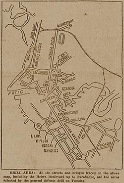

|
j
a v a s c r i p t |
August 14, 1944 — Monday
Aquino spoke over PIAM last night about American Occupation Day. It was an uninspiring and dull performance. Only a few words are worth quoting: "American rapacity ... imperialistic aggrandizement ... imperial deceit ... economic bondage...." One gets the feeling that he no longer meant it but had to go on because the Japanese and the Filipinos expected it, and not to go on would be cowardice at this late stage.

Off Limits for Anti-Air Drill
An unusually long "air-defense drill" will take place from 0830 to noon tomorrow. As the business area will be closed for the morning, a holiday has been unofficially declared by all concerned. Some residential districts and the northern and southern exits of Manila will also be affected, so it's obvious to us all that the purpose is to facilitate the movement of Japanese troops and equipment. We'll all be keeping an eye out. |
|
|
|
|